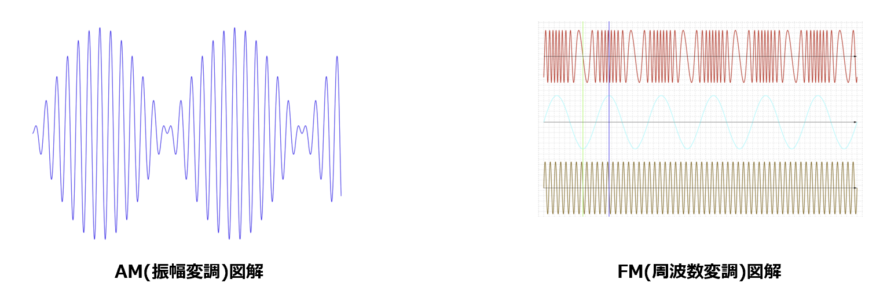

📡 音声の伝送方式：デジタル伝送とアナログ伝送
本資料では、電話や通信ネットワークで使われる「音声の伝送方式」として、デジタル伝送 と アナログ伝送 の違いと特徴を整理します。
同じ「音声」を運ぶ仕組みでも、ビット列として送るか、アナログ波のまま送るか で考え方や特性が大きく変わります。
1. デジタル伝送とは
デジタル伝送 は、音声信号を一度デジタルデータ（ビット列）に変換してから、そのビット列をそのまま伝送する方式です。
- 音声を A/D 変換し、0 と 1 のビット列として表現
- 代表例：64kbps PCM（G.711 / 64PCM）
- 「音声を 64キロビット/秒で符号化し、そのデータをビット配列としてそのまま伝送」するイメージ
1.1 64kbps PCM（G.711 / 64PCM）のイメージ
固定電話網などで使われる代表的な方式です（G.711）。
- サンプリング周波数：8kHz（1秒間に8,000回サンプリング）
- 量子化ビット数：8ビット
- 8,000サンプル × 8ビット = 64,000ビット/秒（= 64kbps）

【デジタル伝送（64kbps PCM）の流れ】
アナログ音声
↓ A/D変換（サンプリング＋量子化）
8ビットのPCMデータ（0/1のビット列）
↓ タイムスロットやパケットに格納
デジタル回線・IPネットワーク上を伝送
デジタル伝送のメリット
- ノイズに強い（ビット錯誤として扱えるため、誤り訂正も可能）
- 品質が距離に依存しにくい（中継しても「再生」される）
- 多重化・交換・記録・暗号化との相性が良い
- 音声・データ・映像を同じデジタル基盤上で扱える
デジタル伝送のデメリット
- A/D変換・符号化・多重化などの装置が必要（アナログに比べ回路が複雑）
- 符号化レート（例：64kbps）を確保するだけの帯域が必要
- 過度な圧縮を行うと音質劣化が目立ちやすい
2. アナログ伝送とは
アナログ伝送 は、音声信号をそのままアナログ波として扱い、搬送波にAM/FM変調して伝送する方式です。
- 音声をアナログ電圧・電流の変化として扱う
- その音声信号で搬送波の振幅や周波数を変調（AM, FMなど）
- 「音声を搬送波にのせ、その変調されたアナログデータを伝送する」イメージ

2.1 アナログ伝送のイメージ
【アナログ伝送の流れ】
アナログ音声
↓ マイクで電気信号化（アナログ）
搬送波にAM/FM変調
↓
変調されたアナログ波として伝送（無線・有線）
↓
受信側で復調し、再びアナログ音声として再生
アナログ伝送のメリット
- 回路構成が比較的シンプル（古典的な電話やラジオなど）
- 連続値として扱うため、変換処理なしでそのまま再生できる
- デジタル化しなくてもよいため、ごく単純なシステムには向く
アナログ伝送のデメリット
- 距離に応じて減衰・ノイズが蓄積し、S/N比が悪化しやすい
- 一度劣化した信号を完全に元に戻すことが難しい
- 多重化・交換・暗号化などの高度な処理がやや苦手
- 長距離・大容量通信には不向き（中継ごとに劣化が積み重なる）
3. デジタル伝送とアナログ伝送の比較
| 項目 | デジタル伝送 | アナログ伝送 |
|---|---|---|
| 基本的な考え方 | 音声をビット列（0/1）に変換して伝送 | 音声を連続的な電気信号として、そのまま/変調して伝送 |
| 具体例 | 64kbps PCM（G.711, 64PCM）、デジタル電話網、IP電話 など | アナログ電話回線、ラジオ放送（AM/FM）、古い有線放送 など |
| 帯域の扱い | 符号化レート（例：64kbps）を確保する必要あり | 音声帯域や変調方式に応じたアナログ帯域を使用 |
| ノイズ耐性 | 高い（ビット誤りとして扱え、再生・訂正が可能） | 低い（距離とともにノイズが蓄積し、劣化が戻せない） |
| 装置の複雑さ | A/D変換・符号化・多重化などが必要で比較的複雑 | 変調・復調回路は比較的シンプルな構成も可能 |
| 高度な処理との相性 | 多重化・交換・暗号化・圧縮などとの相性が良い | 高度処理は苦手で、アナログ専用の工夫が必要 |
| 一言で言うと | 「音声をデジタルデータとして扱う近代的な伝送方式」 | 「音声をアナログ波として扱う伝統的な伝送方式」 |
4. デジタルとアナログのイメージ
【デジタル伝送（64kbps PCMの例）】
音声 ──▶ A/D変換 ──▶ 64kbpsのビット列 ──▶ デジタル回線/パケット網
【アナログ伝送】
音声 ──▶ アナログ信号 ──▶ 搬送波にAM/FM変調 ──▶ アナログ回線/無線路
まとめ
- デジタル伝送：音声を 64kbps PCM などで符号化し、そのビット配列をそのまま伝送する方式。ノイズに強く、多重化や暗号化など高度な処理と相性が良い。
- アナログ伝送：音声を搬送波に AM/FM 変調し、その変調されたアナログ波を伝送する方式。構成はシンプルだが、距離とともに劣化しやすい。
- 現代の電話網・IPネットワークでは、基盤はほぼデジタル伝送が主流であり、アナログはユーザインターフェースや一部のローカル区間に残っている形が多い。